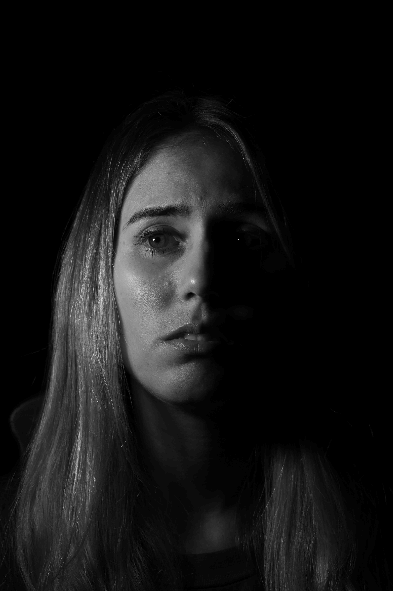
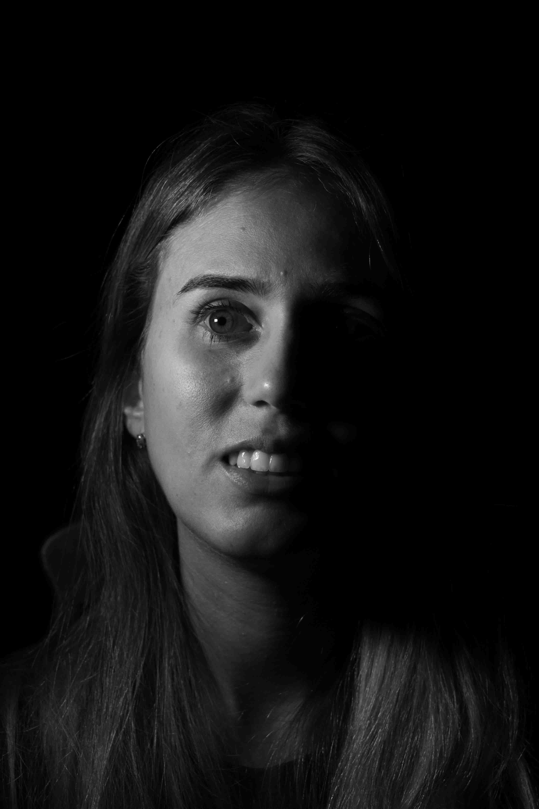

Listen to this page:
Aline is an environmental researcher working in sustainability, with a focus on forest restoration and soil science.
"Desolated"

She tells me that her heart is in pieces every time she reads the news. “Now, with the war, taking away people’s rights, and the threat of nuclear pollution – I feel a tightness in my chest when I think about the state of the planet”, she tells me. “We are walking backwards in terms of conservation and ecosystem protection in Brazil - I’m very deeply upset with the situation”. At the same time, she tells me that she hopes things will get better in the next few years.
"Distressed"

She tells me about the recent bad flooding in Brazil, “It’s getting more and more frequent – so many people have lost their homes, their belongings, their lives. This makes me feel really anxious”. Although she works with environmental issues, she explains that sometimes she feels that there’s not much more she can do. “That makes me even more anxious”.
"Committed"

“Every time I go to the forest, it’s a privilege for me – being there, I feel inspired”, she explains. “I’m so grateful for nature to offer me that moment. I love forests, for me it’s one of the best places to be”. She says she will fight to protect everything – “forests, rivers, oceans. I want people to feel what I feel when I’m in contact with nature. I will do my part to commit myself to spreading actions and words to protect nature more and more”.
I ask her if she feels hope. “Yes. It’s easy for me to answer. Maybe because I live somewhere with forest and lots of natural resources, but I feel a lot of inspiration and I do feel hope.”

Visit the project website